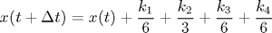

mackeyglass_rk4
This function computes the numerical solution of the Mackey-Glass delayed differential equation using the 4-th order Runge-Kutta method

Here is the code for mackeyglass_eq, the Mackey-Glass delayed differential equation
Matlab code:
function x_t_plus_deltat = mackeyglass_rk4(x_t, x_t_minus_tau, deltat, a, b) k1 = deltat*mackeyglass_eq(x_t, x_t_minus_tau, a, b); k2 = deltat*mackeyglass_eq(x_t+0.5*k1, x_t_minus_tau, a, b); k3 = deltat*mackeyglass_eq(x_t+0.5*k2, x_t_minus_tau, a, b); k4 = deltat*mackeyglass_eq(x_t+k3, x_t_minus_tau, a, b); x_t_plus_deltat = (x_t + k1/6 + k2/3 + k3/3 + k4/6); end